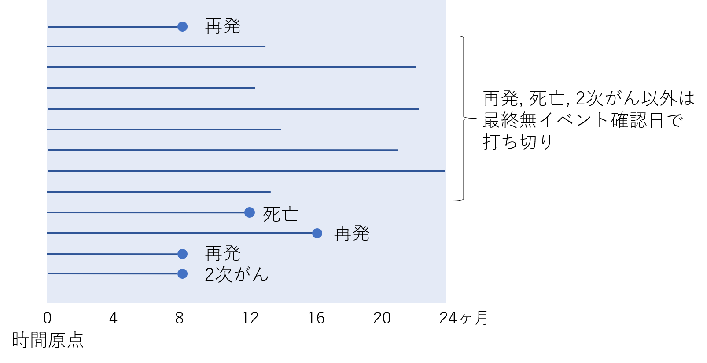

Story and Quiz − Study design II
キーワード: OS/PFS/DFS/奏効率, PICO/PECO, 生存時間データ, 臨床試験 難易度: ★
アウトカムってなに？
私「さっきのアウトカムについてなんだけどね。ジャーナルクラブで臨床試験の論文を読むと出てくる”OS”とか”DFS”とかの略語もアウトカムだよね？実はよくわからないんだけど、当たり前のように使われているから質問しにくいんだ。DFSはがんの再発を調べてるみたいなんだけど。お父さん詳しい？」
お父さん「統計解析をしていて、OSとDFSを扱うことはあるよ。OSは全生存期間（overall survival）、DFSは無病生存期間（disease-free survival）のことだよね」
私「無病生存期間って再発までの日数のこと？」
お父さん「再発までの日数だったら無再発期間って言葉を選ぶかなあ」
私「同じじゃないの？」
お父さん「学術的には違うよ。再発を経験せずに、死亡することもあるでしょ。無病生存期間のポイントは、再発、2次がん、死亡までの期間だってこと。つまり、再発だけでなく、死亡したり別のがんを発症したりしたときも、イベントとして扱われる」

私「イベント扱いって？」 お父さん「生存時間データは、一般に特定のイベントまでの経過時間なんだ。端的にいうとね、無病生存期間のデータから“3年無病生存確率”を計算するとするでしょ。それは“イベントが起こらない確率”に相当するんだけど、意味合いとしては3年時点で、再発も2次がんも経験せず、生存できる確率を求めることになる」 私「そういうことか」 お父さん「薬の臨床試験で用いられるアウトカムは、”エンドポイント”とよばれることもあるね。表に、がん臨床試験の主な生存時間エンドポイントを整理してあげるよ（Japan Clinical Oncology Group 2021）」
| エンドポイント | イベント1 | イベント2 | イベント3 | イベント4 | 打ち切り日 |
|---|---|---|---|---|---|
| 全生存期間 | 死亡 | 最終生存確認日 | |||
| 無増悪生存期間 | 死亡 | 増悪/再発 | 最終無増悪確認日 | ||
| 無再発生存期間 | 死亡 | 再発 | 最終生存確認日 | ||
| 無病生存期間 | 死亡 | 再発 | 2次がん | 最終生存確認日 | |
| 無イベント生存期間 | 死亡 | 寛解導入失敗 | 再発 | 2次がん | 最終生存確認日 |
| 治療成功期間 | 死亡 | 治療中止（治療中の増悪/再発を含む） | プロトコール治療完了後の増悪/再発 | 最終治療継続確認日または最終無増悪確認日 |
私「でかした！」
お父さん「OSは、時間原点から死亡するまでの期間のこと。DFSは、時間原点から再発、2次がん、死亡のうち、最初のイベントまでの期間のこと。でも、さっき言ったみたいに、3年OSとか3年DFSという言い方をすることもある。この場合は期間じゃなくて確率の意味になる。OSとDFSの違いは、再発と2次がんが含まれること。そうすると、3年OSより3年DFSの方が、確率は小さくなるよね」
私「時間原点についてもう少し説明してよ」
お父さん「じゃあ、生存時間の原点について、典型的な決め方をいくつか紹介しようか。まず、DFSは根治手術後の再発状況を調べるため用いられるアウトカムだよね。だから、”手術日”がこの場合の時間原点の候補になる。手術日のように治療の起点がはっきりしている状況だと決めやすいよね。一方で、もし”退院日”を時間原点にすると、手術直後の死亡が評価対象にならなくなっちゃうから、研究によってはそこを批判されるかもしれない。もうひとつ典型的な決め方を挙げると、臨床試験の登録日があるかな。ランダム化臨床試験だと、登録日に治療をランダムに割付けるから、それを原点にして生存曲線を描くのが自然だよね」
 臨床エンドポイントと代替エンドポイント
臨床エンドポイントと代替エンドポイント
OSとDFSは、特に術後補助化学療法の有効性を評価するときに用いられるアウトカム （エンドポイントともいいます）です。それでは両者は、どのような考え方で使い分けられているのでしょうか。指針の1つになっているのが、医薬品の承認審査の考え方です。たとえば抗悪性腫瘍薬の臨床評価方法に関するガイドライン（厚生労働省2021）では、抗がん剤を承認するためには、生存期間の延長などにもとづき、確実な有効性を示す必要があると述べています。そのため、OSを臨床エンドポイントとみなして、こちらが重視されます。 米国国立衛生研究所（NIH）は、エンドポイントを以下の3つに分類しています（Biomarkers Definitions Working Group 2001）。
- バイオマーカー （biological marker or biomarker） 正常な生物学的プロセス、病態形成プロセスあるいは治療的介入に対する薬理学的反応の指標として客観的に測定および評価されるある特性
- 臨床エンドポイント（clinical endpoint） 患者がどのように感じ、あるいは機能し、どのくらい生存しているかを反映する特性あるいは変数
- 代替エンドポイント（surrogate endpoint） バイオマーカーのうち、臨床エンドポイントの代わりになることが意図されたもので、疫学、治療学、病態生理学または他の科学的根拠にもとづき、臨床上の便益・害の有無を予測することが期待されるもの
致死的疾患のための医薬品開発では、代替エンドポイントを用いた臨床試験の結果をもとに承認審査が行われ、臨床エンドポイントによる有効性・安全性の評価は承認後になされることが国際的に許されています。たとえば米国食品医薬品局（FDA）の加速承認制度（Accelerated Approval）には、代替エンドポイントの利用条件などが規定されています。 加速承認制度は、AIDS問題に端を発して、90年代に緊急性の高い医薬品を早期開発するために導入されました。
術後補助化学療法としての抗がん剤の有効性を評価する臨床試験では、DFSを代替エンドポイントとして採用することがありますが、その最大のメリットは試験期間が短くなることです。ただし、過去の承認審査では、代替エンドポイントの利用が誤った医薬品評価につながったケースが数多く報告されています（Fleming and Demets 1996）。たとえば、進行大腸がんにおける5FU+ロイコボリン併用療法は、臨床試験で腫瘍縮小がみられたにもかかわらず、臨床エンドポイントであるOSを評価すると、ほとんど延命効果がないことが明らかになりました（Fleming and Demets 1996）。
 最後にクイズです
最後にクイズです
奏効率（response rate）とは、抗がん剤による治療を行った結果、何割の患者で腫瘍が縮小したか（完全奏効または部分奏効を達成したか）や血液から腫瘍細胞が消えたか（完全寛解）を表す指標です。この用語は広く用いられていますが、Japan Clinical Oncology Group（JCOG）では奏効割合（response proportion）という表現を好んでいます（Japan Clinical Oncology Group 2021）。
さて、次の指標のうち、率（rate）に該当するのはどれでしょうか。
- 打率
- 男女比率
- 有病率
- 死亡率
正解と解説
正解は4です。
割合、率、比の3つの違いについて説明しましょう。比とは、ある量を別の量で割ったもののことです。たとえば、BMIは体重を身長で割ったものですから比の一種で、単位はkg/m2です。割合は、一部の数を全体の数で割ったもの（言い換えると、分母が分子を含んでいるもの）です。割合は、もちろん2値データや分類データを要約するために用いられる指標ですよね。この指標は、言葉の定義からいって、比の一種です。しかし、割合は、①100%を超えない、②人数を人数で割っているためキャンセルして単位がない（無単位）という特徴があります。割合と区別してほしいのが率です。たとえば胃がんの発生率（incidence rate of gastric cancer）というと、一定時間に胃がんが発生するスピードで、人年法（胃がんの発生数/観察人年）で計算されます。人数を人数×年で割っているため、単位は1/年（より一般には1/時間）です。
「打率」は安打数÷打数であり、「割合」になります。
「男女比率」は男性の人数÷女性の人数であり、「比」になります。
「有病率」は疾患を有する人の人数÷全体の人数であり、「割合」になります。
「死亡率」は死亡件数÷観察人年であり、「率」になります。
 もうひとつクイズです
もうひとつクイズです
2009～2014年にFDAによって承認されたがん領域の医薬品は、83品目あったそうです。奏効率（腫瘍縮小や完全寛解）がエンドポイントの臨床試験を根拠として承認されたのは、83品目のうち何割だったか、正しいものを選びなさい。
- 0～24%
- 25～49%
- 50～74%
- 75～100%
正解と解説
正解は2です。 Kim and Prasad（2016）の総説論文によると、奏効率の結果に基づいて承認されたのは83品目のうち31品目と報告されています。また、エンドポイントの内訳は通常承認と加速承認では異なります。通常承認では、品目55品目のうち48品目が全生存期間、無増悪生存期間、無病生存期間で評価されたのに対し、加速承認では、奏効率を主要エンドポイントとする第II相試験の結果を根拠にした品目が大多数でした。